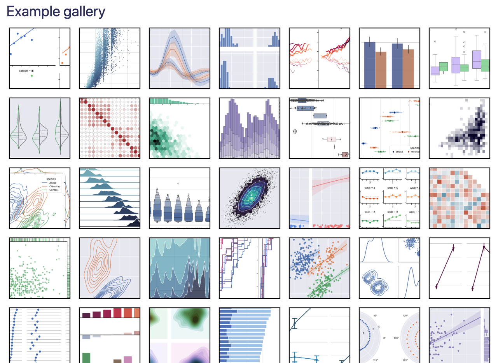
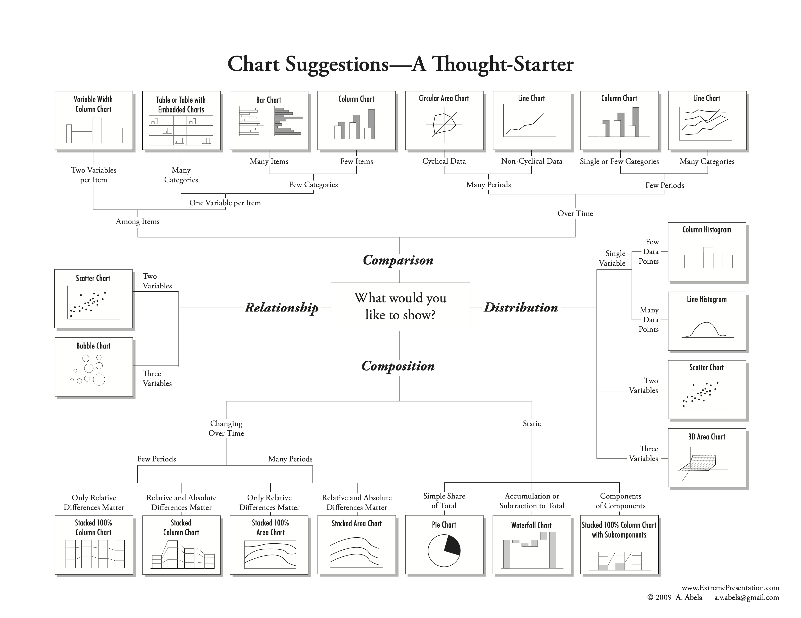
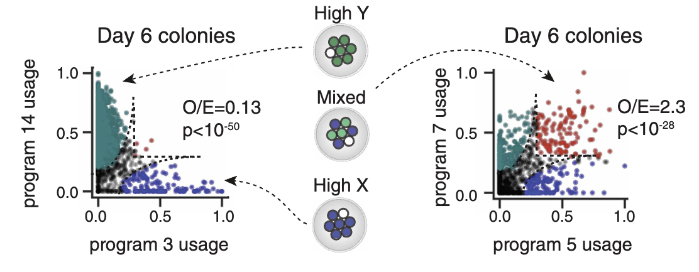
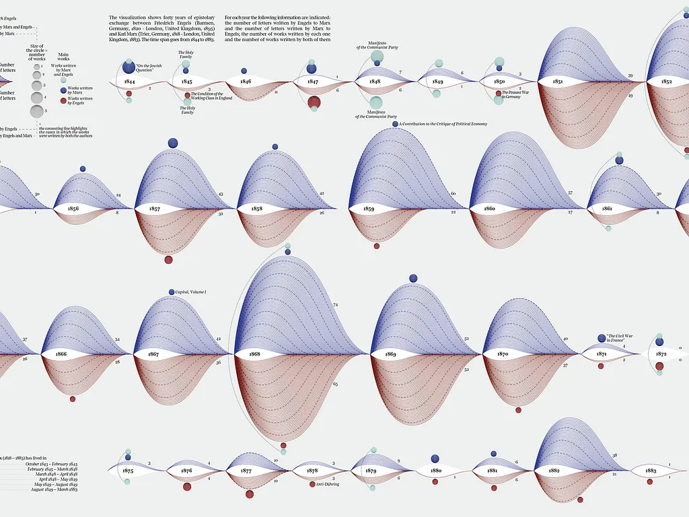
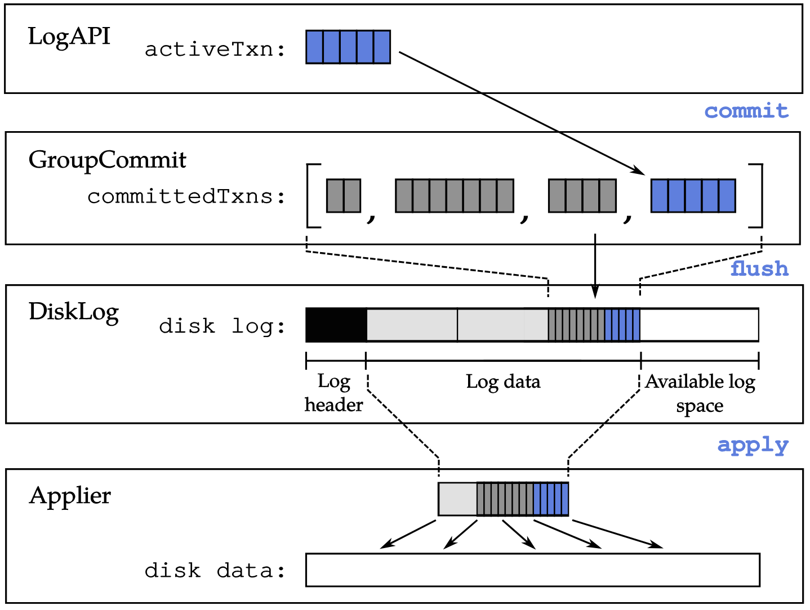
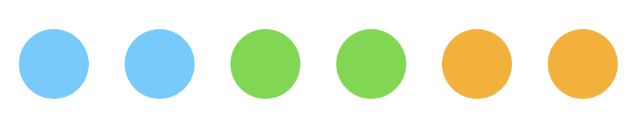
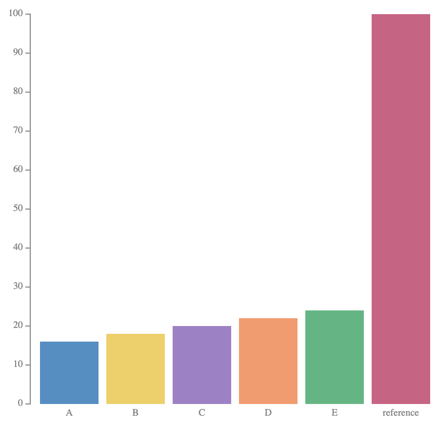
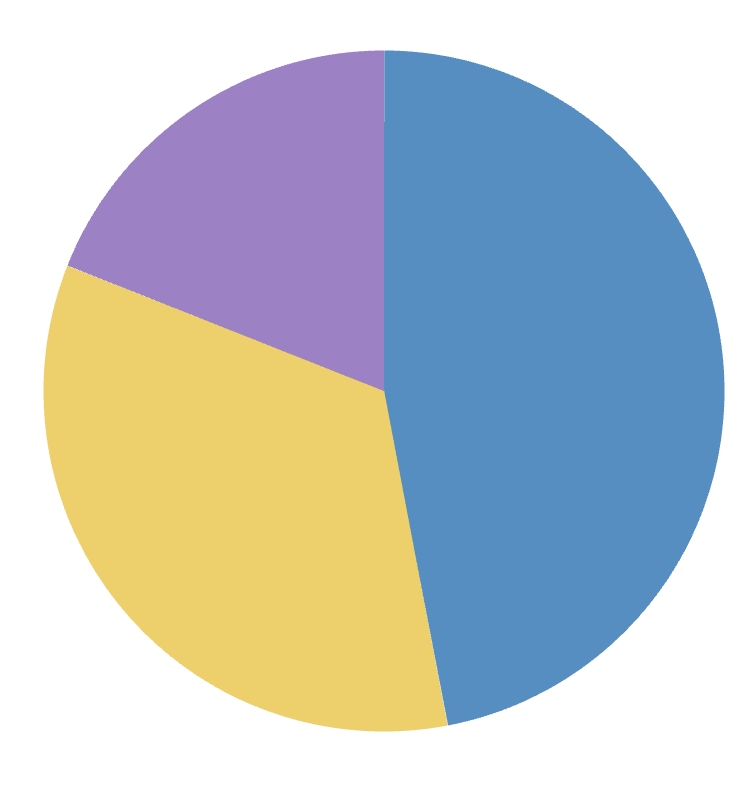

how do we decide what chart to use?


The problem
menus become rules
This chart is good. This chart is bad. Use this color scheme, not that one.
Rules are useful, but brittle. They tend to be all-or-nothing just when scientific graphics need judgment.
The stance
I'm a stylistic anarchist
Not anti-style. Anti brittle rules.
A prerequisite to designing good graphics is seeing what they are doing as clearly as possible, before ranking them by type.
A better lens
grammar vs elements of style
Grammar names the relationships. Style controls the voice.
Grammar
containment, alignment, connection, order, scale, emphasis
Style
palette, texture, typography, density, ornament, tone
graphics don't always fall into neat taxonomies



grouped bar charts aren't created equal
what trend do you see here?
what about now?
how about now?

these are all the same kind of chart — yet our takeaways differ
To talk about visual structure precisely, we need a language.
GoFish is based on Gestalt grouping principles
| containment | |
| connection | |
| similar attribute |
 |
| alignment | |
| proximity / uniform density |

|
| containment | |
| connection | |
| similar attribute |
| alignment | |
| proximity / uniform density |
|
GoFish walkthrough
start with the data shape
chart(barley) .flow( ) .mark( )
place one slot per site
chart(barley) .flow( spread({ by: "site", dir: "x" }) ) .mark( rect() )
The first operator creates a row of visual neighborhoods.
make yield visible
chart(barley) .flow( spread({ by: "site", dir: "x" }) ) .mark( rect({ h: "yield" }) )
The mark says what gets drawn; the channel says what property carries the value.
some transforms are implied
chart(barley) .flow( spread({ by: "site", dir: "x" }) ) .mark( rect({ h: "yield" }) )
aggregate yield by site
add a second grouping
chart(barley) .flow( spread({ by: "site", dir: "x" }), spread({ by: "variety", dir: "x" }) ) .mark( rect({ h: "yield", fill: "variety" }) )
nesting order changes the question
site → variety
What are the trends across sites?
spread({ by: "site", dir: "x" }) spread({ by: "variety", dir: "x" })
variety → site
What is the most productive site for each variety?
spread({ by: "variety", dir: "x" }) spread({ by: "site", dir: "x" })
stack()
chart(barley) .flow( spread({ by: "variety", dir: "x" }), stack({ by: "site", dir: "y" }) ) .mark( rect({ h: "yield", fill: "site" }) )
Easier part-to-whole readings, while preserving direct variety comparison.
nesting order matters
chart(data).flow(
spread("lake", dir="x"),
stack("species", dir="y"),
).mark(rect(h="count", fill="species"))chart(data).flow(
spread("lake", dir="x"),
spread("species", dir="x"),
).mark(rect(h="count", fill="species"))chart(data).flow(
spread("species", dir="x"),
spread("lake", dir="x"),
).mark(rect(h="count", fill="species"))flattening the hierarchy
chart(data).flow(
spread("lake", dir="x"),
stack("species", dir="y"),
).mark(rect(h="count", fill="species"))chart(data).flow(
table("lake", "species"),
).mark(rect(fill="count"))derive() to sort
chart(barley) .flow( spread({ by: "variety", dir: "x", spacing: 24 }), spread({ by: "year", dir: "x", spacing: 4 }), derive(d => orderBy(d, "yield", "asc")), stack({ by: "site", dir: "y" }) ) .mark( rect({ h: "yield", fill: "site" }) )
Add year as a second grouping, then sort each stack by yield before placing it.
connect related bars
Layer([
chart(barley)
.flow(
spread({ by: "variety", dir: "x", spacing: 38 }),
spread({ by: "year", dir: "x", spacing: 8 }),
derive(d => orderBy(d, "yield", "asc")),
stack({ by: "site", dir: "y" })
)
.mark(rect({ w: 16, h: "yield", fill: "site" }).name("bars")),
chart(selectAll("bars"))
.flow(group({ by: "variety" }), group({ by: "site" }))
.mark(area({ opacity: 0.5 }))
])
style is downstream of structure
Layer([
chart(barley, {
color: palette({
Waseca: "#d7dadd", Morris: "#49a66a",
"Grand Rapids": "#d7dadd",
Crookston: "#d7dadd", Duluth: "#d7dadd",
}),
})
.flow(
spread({ by: "variety", dir: "x", spacing: 38 }),
spread({ by: "year", dir: "x", spacing: 8 }),
derive(d => orderBy(d, "yield", "asc")),
stack({ by: "site", dir: "y" })
)
.mark(rect({ w: 16, h: "yield", fill: "site" }).name("bars")),
chart(selectAll("bars"))
.flow(group({ by: "variety" }), group({ by: "site" }))
.mark(area({ opacity: 0.78 }))
])
Once the structure is right, palette becomes an attention decision instead of a chart-type decision.
mapping length to angle changes the afforded queries


mapping length to angle changes the afforded queries


scatter -> pie = scatterpie
chart(scatter_data).flow(
scatter("lake", x="x", y="y")
).mark(
chart(coord=clock())
.flow(stack("species", dir="x"))
.mark(rect(w="count", fill="species"))
)
Outer structure:
scatter() affords "where?" queries.
Inner structure: pie affords "what fraction?" queries.
same glyph, new dataset — barley, two years
// x, y: each site's Minnesota lon/lat
chart(barleyScatterByYear(1931))
.flow(scatter("site", { x: "x", y: "y" }))
.mark((data) => {
const totalYield = totalYieldFor(1931, data[0].site);
return chart(data[0].collection, { coord: clock() })
.flow(
stack("variety", {
dir: "x",
h: pieRadius(totalYield),
})
)
.mark(rect({ w: "yield", fill: "variety" }));
})Same construction as the lake scatter-pie: each trial site sits at its real Minnesota location, and each glyph is a pie of that site's variety mix.
New move: pie radius (h)
scales with each site's total yield that year, on
a shared scale across both charts.
1931
1932
What just happened?
We took one dataset and made a series of deliberate structural moves.
Each move changed what was easy or hard to see.
We didn't have to pick from a menu of charts... though those are useful shorthands for common structures!
Instead, chart type labels like bar or pie were just structural motifs we encountered along the way.
operators map data types to Gestalt relations
| Operator | Data type | Gestalt relation |
|---|---|---|
spread |
discrete | alignment & uniform density |
stack |
partitioned continuous | part-to-whole |
scatter |
continuous × continuous | none — no discrete grouping |
area / line / ribbon
|
continuous or contiguous | connection |
table |
discrete × discrete | uniform density |
takeaways
1. Chart types are great shortcuts, but graphics are really sophisticated visual structures.
2. Changing this structure changes what your reader can and can't see in (probably) predictable ways.
3. Thinking structurally helps us move beyond familiar charts and rigid rules to designs that might better fit our data or task.